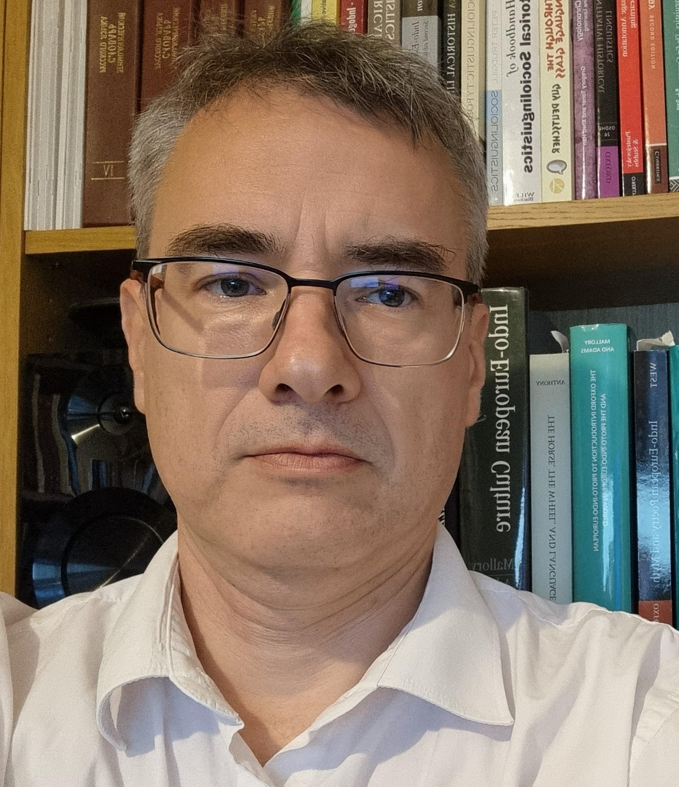
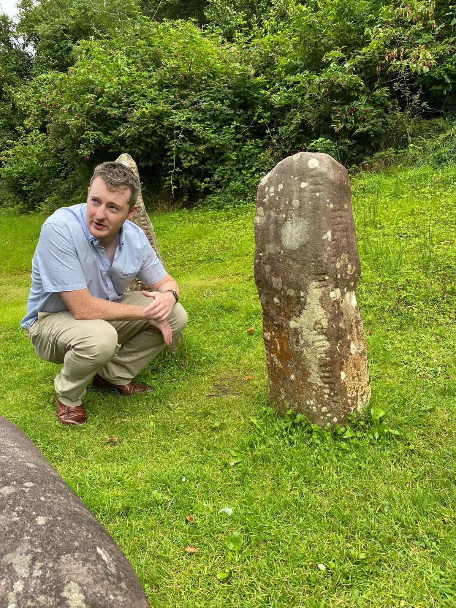
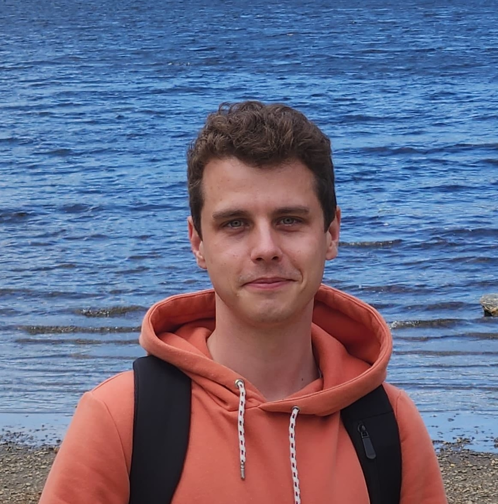

Project team
Principal Investigator

Prof. David Stifter
PI
David Stifter is Senior Professor at the School of Celtic Studies of the Dublin Institute for Advanced Studies and a Member of the Royal Irish Academy. His research focuses on the synchronic and diachronic linguistics, philology, epigraphy and literature of the Ancient Celtic languages (Lepontic, Gaulish, Celtiberian) and of Early Irish (Primitive Irish, Old Irish, Middle Irish). He has received funding from, amongst others, the Austrian Science Fund, the European Research Council, Taighde Éireann – Research Ireland (formerly the Irish Research Council), and he has collaborated with researchers in the UK, France, Italy, Spain, Austria and other countries. In 2023, he received a Commendation for the Irish Research Council Researcher of the Year Award.
Post-doctoral Researchers
Dr Truc Ha Nguyen
Old Irish philology and database annotation
Truc Ha holds a BSc in Radiation Therapy (2010) from the University of Sydney and worked for a year treating cancer patients in Tasmania, Australia. Afterwards, she completed a BA in Celtic Studies (2015) in the University of Sydney and then an MA in Early Irish (2017) in Trinity College Dublin. Her PhD project was a critical edition of the Middle Irish text Airec Menman Uraird maic Coisseem>. Her research interests are in textual criticism, Old and Middle Irish language and literature and manuscript studies. She was a member of the ChronHib since August 2019 as a part-time research assistant, before joining the DiⒶgnostic project in 2025.

Dr Adrian Doyle
NLP and DH research for Old Irish
Adrian's work focuses on computational techniques and resources to support under-resourced and minority languages. His work on the DiⒶgnostic project involves developing computational tools and techniques to support the study of dialect in Old Irish writings, and to facilitate the digitisation and annotation of Early Irish texts. His research interests are in the area of natural language processing for Celtic languages. Before joining the DiⒶgnostic project, Adrian took part in projects like Cardamom and Teanga2.0 at the Insight Centre for Data Analytics, and GLOSSAM in the Department of Classics at University of Galway. Adrian received his PhD research from the University of Galway in 2024 for his work on the application of NLP techniques to diplomatically edited Old Irish text.
Dr Francesco Felici
Old Irish pedagogy and database annotation
Francesco holds an MA in Scandinavian Languages from the University of Pisa, Italy, and a second MA in Finno-Ugric Linguistics from the École Pratique des Hautes Études, Paris, France. After teaching Old Norse at the University of Pisa for one year and Italian as a Second Language in American colleges in Florence for ten years, he went on working as a literary translator from Finnish, Norwegian and Danish. As a translator, he published seven novels and one poetry collection. In 2018 he moved to Ireland to begin a PhD in Early Irish at Maynooth University. His thesis (2025) is focused on Old Irish pedagogy, and discusses alternative approaches to the teaching of the language to absolute beginners, as well as the creation of materials to support more advanced learners. During his PhD years, he worked in David Stifter's ChronHib as a Research Assistant, and in 2025 he joined the DiⒶgnostic project.
Early-career researchers

Paul Le Muer-Bouthemy
PhD Student
Paul is currently working as a PhD student in Old Irish historical linguistics as part of the project DiAgnostic (Tracing diatopic variation in a corpus of Old Irish) helmed by Pr. David Stifter at the Dublin Institute for Advanced Studies (formerly at Maynooth University). His thesis' provisional title is: 'Mapping diatopic variation in Old Irish: distributional case studies and linguistic analyses'. The aim of his PhD research is to undertake multiple distributional studies of Early Irish linguistic variation patterns and compare them with one another in order to identify groupings that may be identified as diatopic, i.e. geographically bound. Those case studies will also provide new insights through linguistic analyses. He previously studied Indo-European Historical Linguistics at the École Pratique des Hautes Études (EPHE-PSL) in Paris, with a special focus on Old Norse and Old English philology. He was awarded the Geneviève Nore Award for his MA thesis (in French) 'The Old English Sermon De Falsis Diis and its Old Norse Version from the Hauksbók: Introduction, Texts, Translations and Commentary'. He is also interested in Old Persian, Classical Chinese as well as the different local Oïl languages from North-Western France (i.e. Galo, Normand, Angevin, Mainiot, Poitevin), among others.
Ruben Sester
Research Associate
...